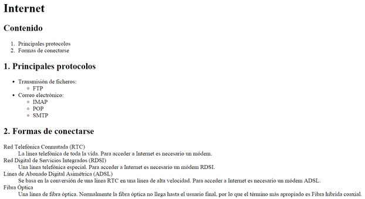

Listas 2
Enunciado
Debes crear una página web que tenga el mismo aspecto que la siguiente imagen:

Internet
Contenido
- Principales protocolos
- Formas de conectarse
1. Principales protocolos
- Transmisión de ficheros:
- Correo electrónico:
2. Formas de conectarse
- Red Telefónica Conmutada (RTC)
- La línea telefónica de toda la vida. Para acceder a Internet es necesario un módem.
- Red Digital de Servicios Integrados (RDSI)
- Una línea telefónica especial. Para acceder a Internet es necesario un módem RDSI.
- Línea de Abonado Digital Asimétrica (ADSL)
- Se basa en la conversión de una línea RTC en una línea de alta velocidad. Para acceder a Internet es necesario un módem ADSL.
- Fibra Óptica
- Una línea de fibra óptica. Normalmente la fibra óptica no llega hasta el usuario final, por lo que el término más apropiado es Fibra híbrida coaxial.